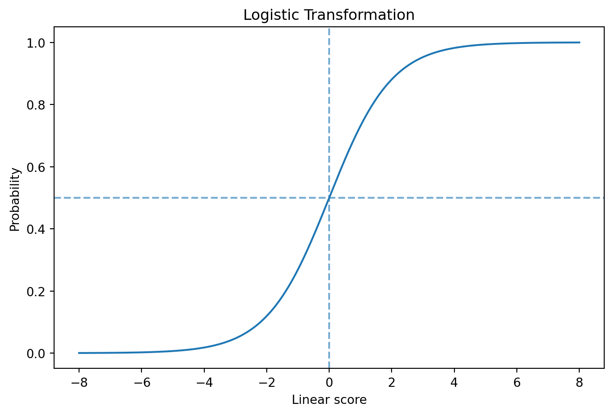
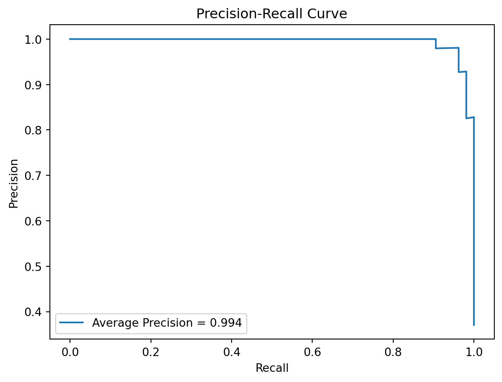
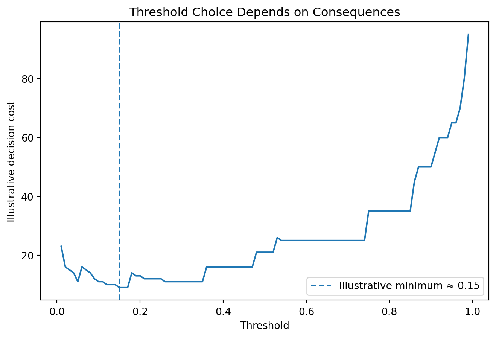

import numpy as npimport matplotlib.pyplot as pltz=np.linspace(-8,8,400)p=1/(1+np.exp(-z))plt.figure(figsize=(8,5))plt.plot(z,p)plt.axhline(.5,linestyle="--",alpha=.6)plt.axvline(0,linestyle="--",alpha=.6)plt.xlabel("Linear score")plt.ylabel("Probability")plt.title("Logistic Transformation")plt.show()

7.5 Coefficients and Odds Ratios
\(\beta_j\) is a conditional change in log-odds. Exponentiation gives
\[
OR_j=e^{\beta_j}.
\]
WarningOdds Ratio ≠ Probability Difference
An odds ratio of 1.49 does not mean probability rises by 49 percentage points.
7.6 Leakage-Safe Logistic Regression
from sklearn.datasets import load_breast_cancerfrom sklearn.model_selection import train_test_splitfrom sklearn.pipeline import Pipelinefrom sklearn.preprocessing import StandardScalerfrom sklearn.linear_model import LogisticRegressiondata=load_breast_cancer(as_frame=True)X=data.data# Recode malignant as positive class 1.y=(data.target==0).astype(int)X_train,X_test,y_train,y_test=train_test_split( X,y,test_size=.25,random_state=42,stratify=y)model=Pipeline([ ("scale",StandardScaler()), ("classifier",LogisticRegression(max_iter=2000))])model.fit(X_train,y_train)prob=model.predict_proba(X_test)[:,1]pred=(prob>=.50).astype(int)
from sklearn.metrics import confusion_matrix, ConfusionMatrixDisplaycm=confusion_matrix(y_test,pred)ConfusionMatrixDisplay(cm,display_labels=["Benign","Malignant"]).plot()plt.title("Confusion Matrix at Threshold = 0.50")plt.show()
from sklearn.metrics import accuracy_score,precision_score,recall_score,f1_scoretn,fp,fn,tp=cm.ravel(){"accuracy":accuracy_score(y_test,pred),"sensitivity":recall_score(y_test,pred),"specificity":tn/(tn+fp),"precision":precision_score(y_test,pred),"f1":f1_score(y_test,pred)}
A classifier predicting everyone negative achieves 99% accuracy when only 1% of observations are positive.
NoteMetric Meaning Is Contextual
A metric is useful when it answers a question relevant to the problem—not merely because its value is large.
7.11 Thresholds Create Tradeoffs
threshold_grid=np.linspace(.01,.99,99)sens=[]; spec=[]for t in threshold_grid: pr=(prob>=t).astype(int) tn,fp,fn,tp=confusion_matrix(y_test,pr).ravel() sens.append(tp/(tp+fn)) spec.append(tn/(tn+fp))plt.figure(figsize=(8,5))plt.plot(threshold_grid,sens,label="Sensitivity")plt.plot(threshold_grid,spec,label="Specificity")plt.axvline(.5,linestyle="--",alpha=.6)plt.xlabel("Threshold")plt.ylabel("Metric value")plt.title("A Threshold Encodes a Tradeoff")plt.legend()plt.show()
ROC-AUC summarizes discrimination/ranking across thresholds. It does not establish calibration or the quality of a particular decision threshold. ROC analysis provides a threshold-spanning view of the tradeoff between true-positive and false-positive rates (Fawcett 2006).
7.13 Precision-Recall Analysis
from sklearn.metrics import precision_recall_curve,average_precision_scoreprecision_vals,recall_vals,_=precision_recall_curve(y_test,prob)ap=average_precision_score(y_test,prob)plt.figure(figsize=(7,5))plt.plot(recall_vals,precision_vals,label=f"Average Precision = {ap:.3f}")plt.xlabel("Recall")plt.ylabel("Precision")plt.title("Precision-Recall Curve")plt.legend()plt.show()

Precision-recall analysis is often especially informative when the positive class is uncommon; under class imbalance, precision-recall curves can reveal performance differences that ROC curves may obscure (Saito and Rehmsmeier 2015).
A model can discriminate well and still produce poorly calibrated probabilities. Probability calibration therefore deserves separate evaluation when predicted probabilities will support decisions (Niculescu-Mizil and Caruana 2005).
The handwritten-digits dataset provides a compact computer-vision workload in which each observation is an (8) grayscale image and the target is one of ten digit classes.
This is a multiclass classification problem:
\[
Y_i\in\{0,1,\ldots,9\}.
\]
For image (i), the classical baseline used here represents the image as a flattened feature vector
\[
x_i\in\mathbb{R}^{64}.
\]
That representation makes the task compatible with logistic regression while giving us a baseline that later vision models can improve upon.
A high AUC does not establish deployment readiness. Decision quality also depends on calibration, threshold selection, error consequences, capacity constraints, subgroup behavior, and downstream action.
7.17 Threshold Selection as Decision Analysis
A simplified cost function is
\[
C(\tau)=C_{FN}FN(\tau)+C_{FP}FP(\tau).
\]
cost_fn=5cost_fp=1costs=[]for t in threshold_grid: pr=(prob>=t).astype(int) tn,fp,fn,tp=confusion_matrix(y_test,pr).ravel() costs.append(cost_fn*fn+cost_fp*fp)best_i=int(np.argmin(costs))best_t=threshold_grid[best_i]plt.figure(figsize=(8,5))plt.plot(threshold_grid,costs)plt.axvline(best_t,linestyle="--",label=f"Illustrative minimum ≈ {best_t:.2f}")plt.xlabel("Threshold")plt.ylabel("Illustrative decision cost")plt.title("Threshold Choice Depends on Consequences")plt.legend()plt.show()

The cost values are illustrative. Real consequences require substantive justification.
7.18 Class Imbalance
Responses may include appropriate metrics, threshold adjustment, class weighting, resampling, additional data collection, or reconsidering the target.
WarningNever Resample Before the Split
Oversampling or synthetic sampling must remain inside the training/resampling workflow.
7.19 Multiclass Classification
For \(Y\in\{1,\ldots,K\}\), models estimate probabilities across classes. Evaluation can use per-class metrics, confusion matrices, and macro or weighted averages.
Macro averaging gives each class equal weight. Weighted averaging weights classes by support.
7.20 Three Tracks
7.20.1 Health Track
Consider positive-outcome definition, prevalence, follow-up action, error consequences, calibration, subgroup performance, and the distinction between risk identification and treatment recommendation.
7.20.2 Education Track
Consider prediction timing, support following a flag, stigma or burden from false positives, missed support from false negatives, intervention capacity, and subgroup performance.
7.20.3 Open ML Benchmark Track
Manipulate scaling, prevalence, overlap, and thresholds to understand classifier behavior without equating benchmark performance with real-world usefulness.
7.21 Beyond the Algorithm: A Probability Is Not a Decision
NoteThe Space Between Prediction and Action
A predicted risk of 0.63 contains no instruction. It does not itself say to label, contact, restrict, intervene, or ignore.
Choosing \(\tau=0.50\) is also not neutral: it determines who experiences the consequences of the decision system.
\[
\boxed{\text{What the model estimates}}
\neq
\boxed{\text{What the organization decides}}.
\]
Ask:
What decision rule transforms this probability into action, who chose that rule, and who bears the cost when it is wrong?
7.22 AI Pair Programmer
Ask AI to choose the “best” classifier from accuracy alone. Audit whether it asks about prevalence, intended use, error costs, threshold, calibration, capacity, subgroup performance, and uncertainty.
7.23 Hands-On Lab: Probability to Decision
Complete the Problem Framing Canvas.
Complete the Feature Ledger.
Establish a DummyClassifier baseline.
Build a leakage-safe logistic-regression pipeline.
Obtain predicted probabilities.
Evaluate thresholds .20, .50, and .80.
Calculate confusion matrices and core metrics.
Plot ROC and precision-recall curves.
Examine calibration.
Define an illustrative asymmetric cost structure.
Identify a candidate operational threshold.
Explain why it remains provisional.
Compare one additional classifier.
Distinguish ranking, probability, and decision quality.
7.25 Professor’s Challenge: Which Model Is Better?
Model A has higher accuracy and ROC-AUC but lower sensitivity and poor high-risk calibration. Model B has lower accuracy/AUC but substantially higher sensitivity and good calibration. The outcome is uncommon and false negatives are believed more consequential than additional follow-up.
Critique any claim that Model A is automatically superior. Address prevalence, discrimination, calibration, sensitivity, specificity, precision, threshold dependence, error consequences, metric uncertainty, threshold-selection leakage, external validation, subgroup performance, capacity, and deployment readiness.
7.26 Knowledge Check
Why is linear regression unsuitable for binary probability modeling?
What are odds?
What does the logit do?
How is a logistic coefficient interpreted?
Why is an odds ratio not a probability difference?
What converts probability into class?
What does sensitivity measure?
What does precision measure?
Why can accuracy mislead for rare outcomes?
What does ROC-AUC summarize?
Why use precision-recall analysis?
How do discrimination and calibration differ?
Why is .50 not automatically correct?
Why must resampling stay inside training?
What does macro averaging emphasize?
Why is a probability not a decision?
Why is 0.50 not a universal threshold?
How do asymmetric error costs affect threshold choice?
Why can models with similar AUCs produce different deployment decisions?
7.27 Reproducibility Check
Record positive-class definition, prevalence, feature ledger, preprocessing, validation design, baseline, classifier, probabilities, threshold-selection procedure, confusion matrices, discrimination metrics, calibration, cost assumptions, subgroup analyses, seeds, package versions, and all code.
Never select a threshold on the final test set and report performance on that same set as if the threshold were fixed in advance.
7.28 Key Takeaways
Classification often begins with probability estimation.
Logistic regression models log-odds as a linear function.
Odds ratios and probability differences differ.
Thresholds transform probabilities into classifications.
Confusion matrices reveal error types.
Accuracy can mislead under imbalance.
ROC and precision-recall analysis reveal different aspects of ranking.
Discrimination and calibration are distinct.
Thresholds should reflect intended use and consequences.
A highest-AUC model is not automatically the best decision system.
A predicted probability does not contain an instruction for action.
Classification probabilities become consequential only after a decision rule is applied.
Thresholds should reflect consequences and constraints.
Strong discrimination does not guarantee a good decision policy.
Niculescu-Mizil, Alexandru, and Rich Caruana. 2005. “Predicting Good Probabilities with Supervised Learning.” In Proceedings of the 22nd International Conference on Machine Learning, 625–32. Association for Computing Machinery. https://doi.org/10.1145/1102351.1102430.
Saito, Takaya, and Marc Rehmsmeier. 2015. “The Precision-Recall Plot Is More Informative Than the ROC Plot When Evaluating Binary Classifiers on Imbalanced Datasets.”PLOS ONE 10 (3): e0118432. https://doi.org/10.1371/journal.pone.0118432.